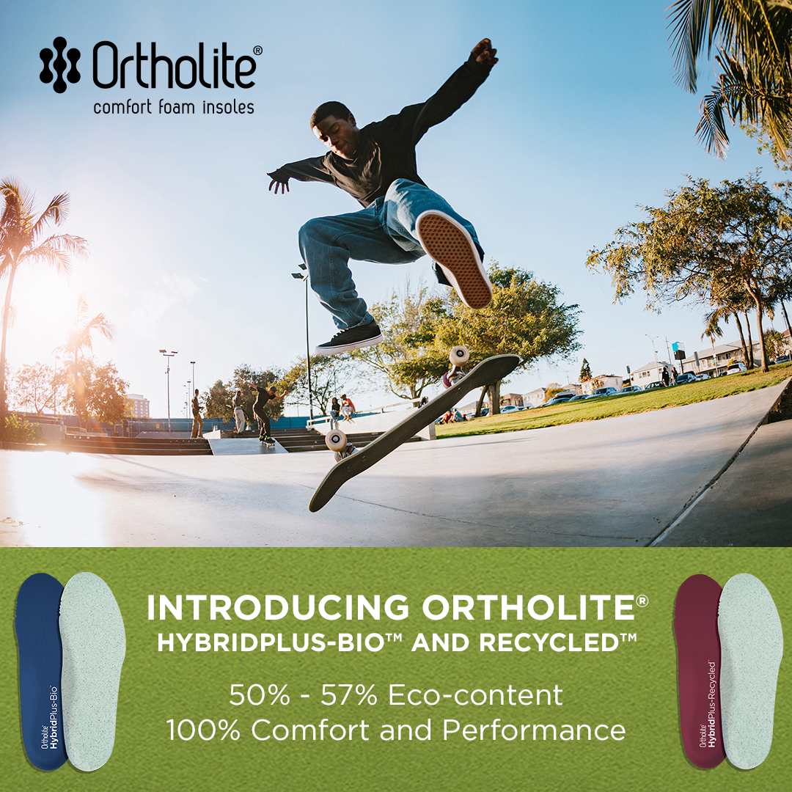
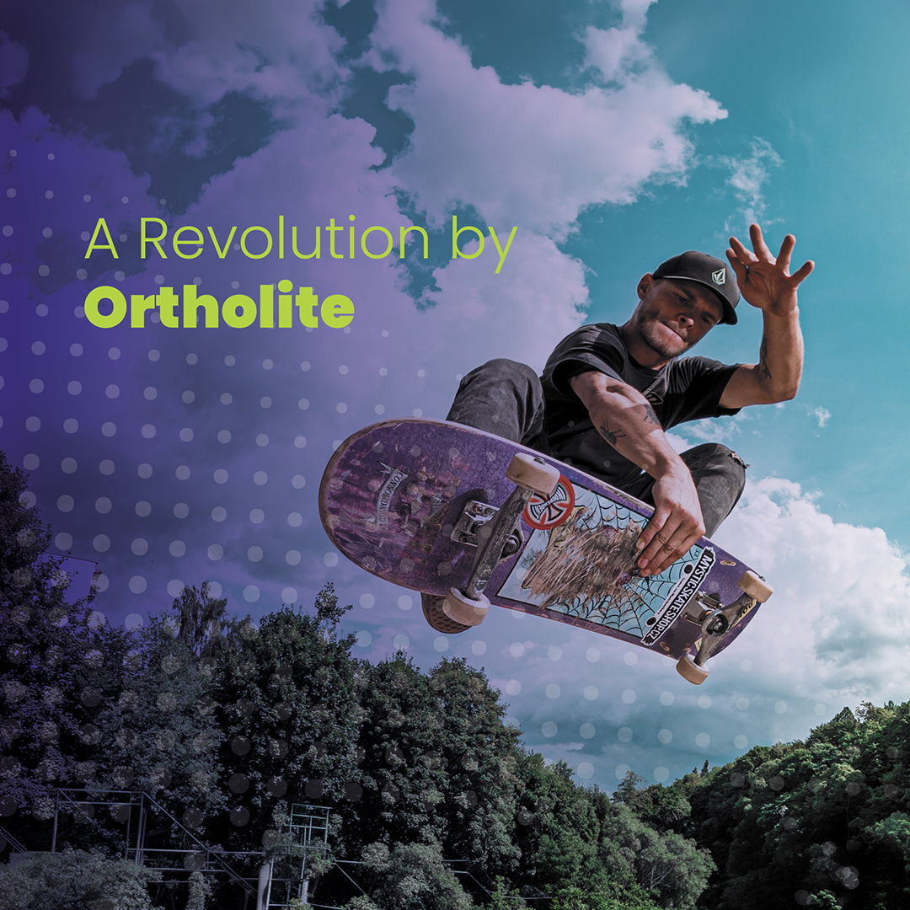

Ortho
Lite
Digital and social media campaign educating the public on OrthoLite's technology — animated product videos and social content.

Digital and social media campaign educating the public on OrthoLite's technology — animated product videos and social content.
OrthoLite makes the insole technology inside shoes from Nike, Adidas, and New Balance — but almost nobody knows their name. The product is genuinely superior (moisture wicking, air circulation, shock absorption, odor control), but the brand was invisible to end consumers. They needed a digital campaign that made people care about what's inside their shoes.
I designed a series of social media ads and animated product videos that translate technical performance data into visual content people actually want to watch. Technical cross-section graphics show what the insole does at a material level, while the animated videos bring the product benefits to life in motion. The campaign was built to educate first and sell second — giving OrthoLite a clear advantage over competitors who lead with price instead of science.

